Creating and Managing Category Filters
In the following section we will show you how to create a Category filter set and customize filter behavior.
Creating a Filter Set
To create a new filter set:
- Go to the Search and Filters and click Category Filters.
- Select the root category from the Root nodes list table. 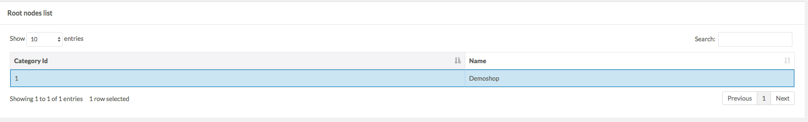
- The Category tree will be populated by the nodes nested under the selected root category. 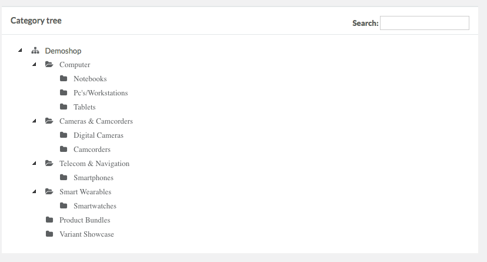
-
Choose a category for which you would like to overwrite the default global settings.
To find a specific category, start entering its name in the Search field and the results will be automatically highlighted in the category tree. - After selecting a category, the Category Filters for [Category name] frame opens to show the current configuration.
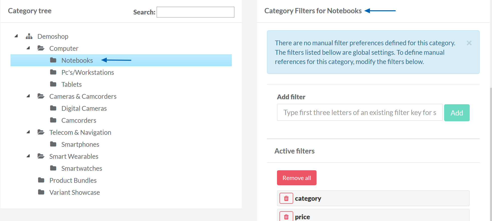
Categories in the category tree view that do not have default global filter settings, are marked with a pencil icon next to their name. Clicking Reset to global settings in the Category Filters for [Category name] will remove the customized filter settings.
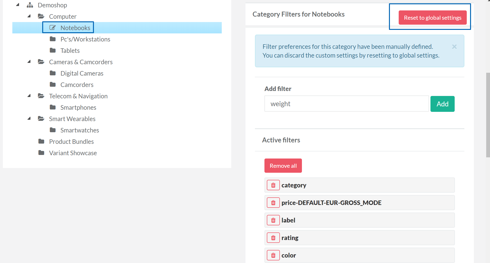
- TheCategory Filters for [Category name] area is for adding new filters, re-ordering the list, removing a specific filter, or re-adding a previously removed filter. To manage category filters see Managing Category Filters below. 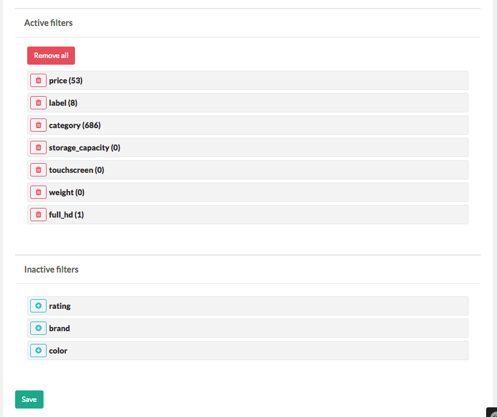
- After clicking Save, your changes will be applied to the category and filters. 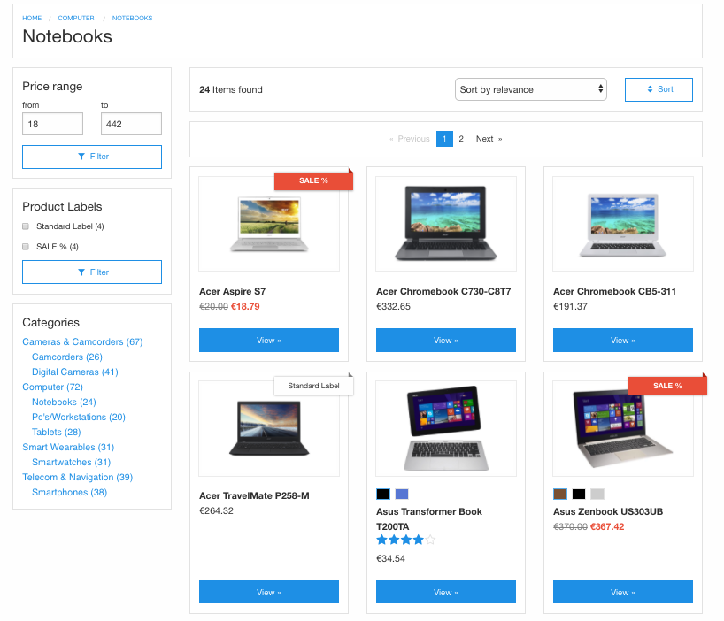
In our example, the order changed, brand, rating and color have been removed.
Managing Category Filters
Category filters are managed in Category Filters for [Category name]. Here you can add, remove and re-order the filters.
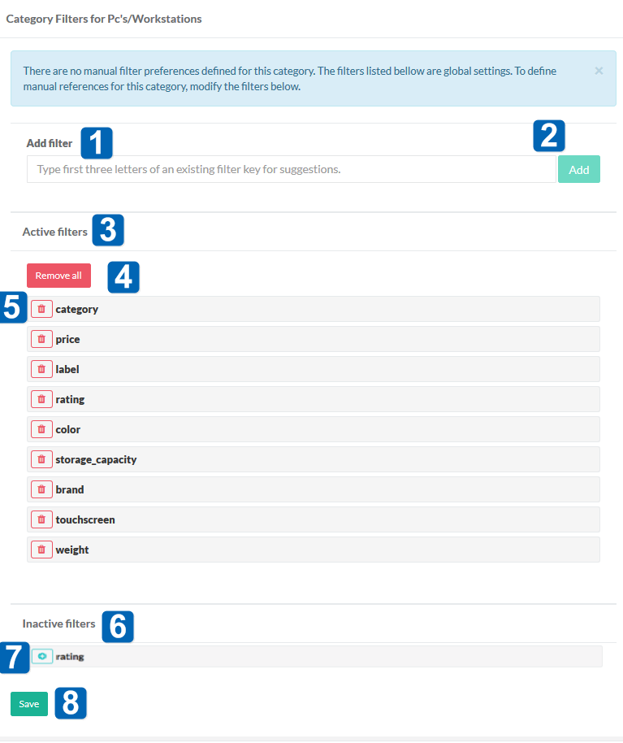
The Category Filters page consists of the following elements:
| # | Element | Description |
| 1 | Add filter | In this field for you can search for filters to add to the selected category. |
| 2 | Add | Add found filters to active filters by clicking this button. |
| 3 | Active filters | List of active filters for your category. |
| 4 | Remove all | Click this button to remove all of the active filters and make them inactive. |
| 5 | Basket icon | Click the basket icon to remove a single filter from active filters and make it inactive. |
| 6 | Inactive filters | List of inactive filters for your category. |
| 7 | Plus icon | Click the plus icon to re-add a filter to the list of active filters. |
| 8 | Save | Click this button to save your changes. |
To add a filter:
- Start typing the name of the existing filter in the Add filters field. As you type, the autocompleted dropdown will appear so you can select a filter there.
- After selecting the filter, click Add button. The filter will appear in the Active filters list. Please note, that if the list of active filters contains filters that have no matching products, such filters are displayed in italics in the list of active filters. 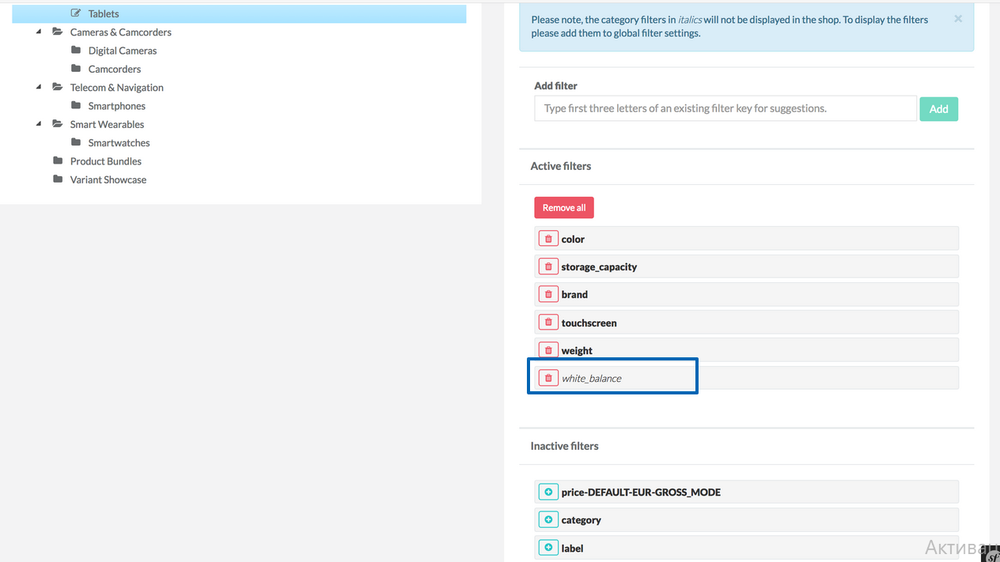
- Go to Go to the Search and Filters section and select Filter Preferences.
- Click Create filter button in the top right corner. 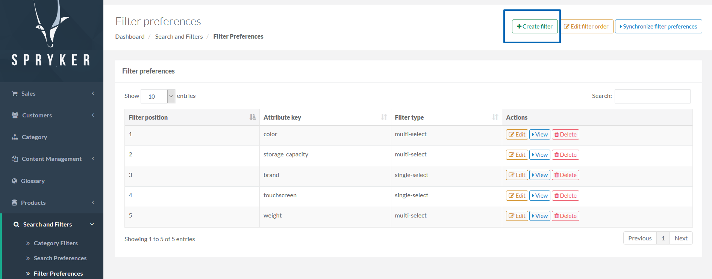
- Specify Attribute key, Filter type and Filter name.
- Click Save.
- On Filter Preferences page, click Synchronize filter preferences button. 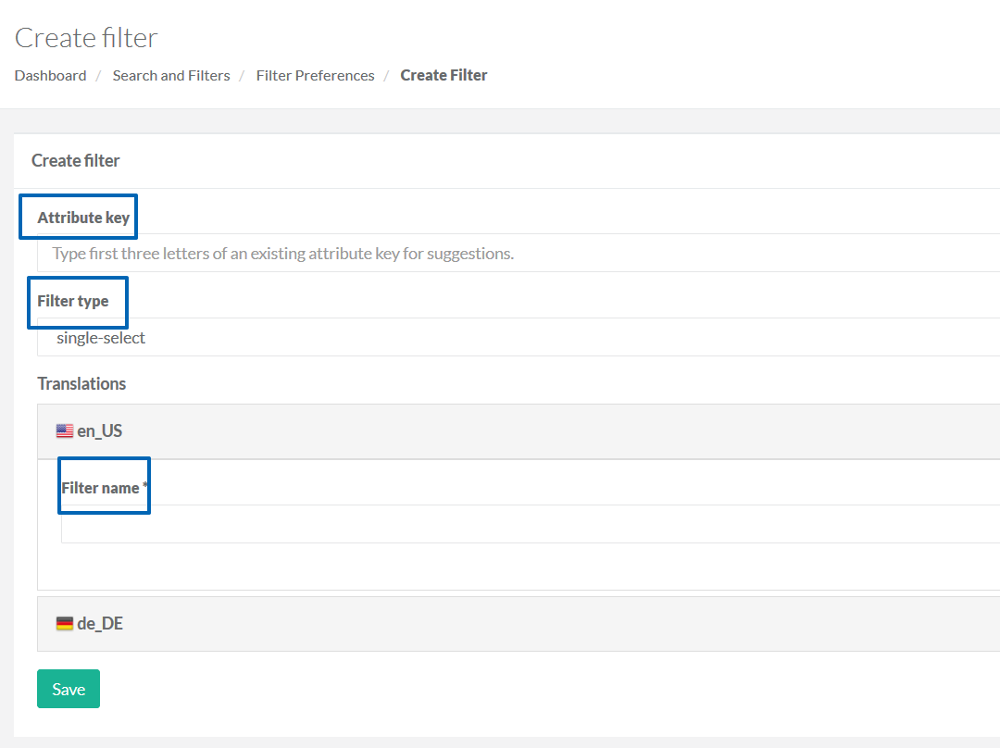
- Click Save.
These filters will not be shown in Yves, because they are not added to global filter settings. To add them to the global filter settings, do the following:
To reorder filters, just drag and drop them to the necessary place.
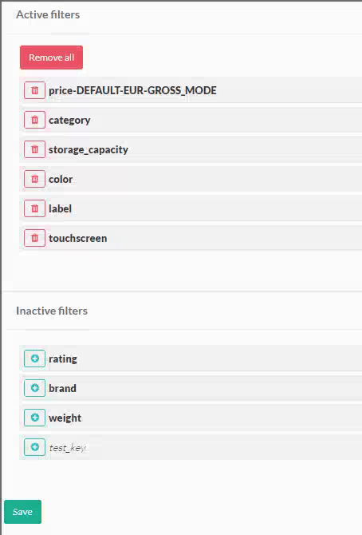
It is possible to remove either all filters from the active filters at once, or just single filters.
To remove all filters, click Remove all button.
To remove single filters, click a basket icon at the filter you want to remove. The removed filters will be moved to Inactive filters list.
To add the removed filters again, click on the green plus sign at the filters you want to add back from Inactive filters.
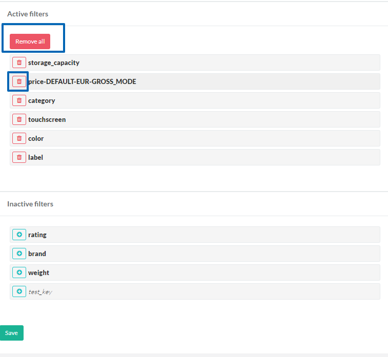
See also:
- Search and Filters
- Category Filters Overview
- The Category Filters Page
- Category Filters
- Feature Integration - Category Filters
- Under the Hood - Category Filters
Last review date: Dec. 22nd, 2017